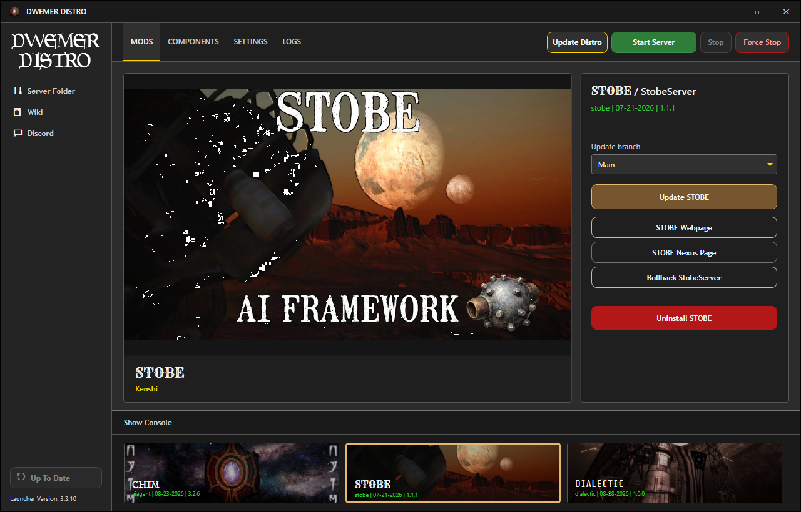
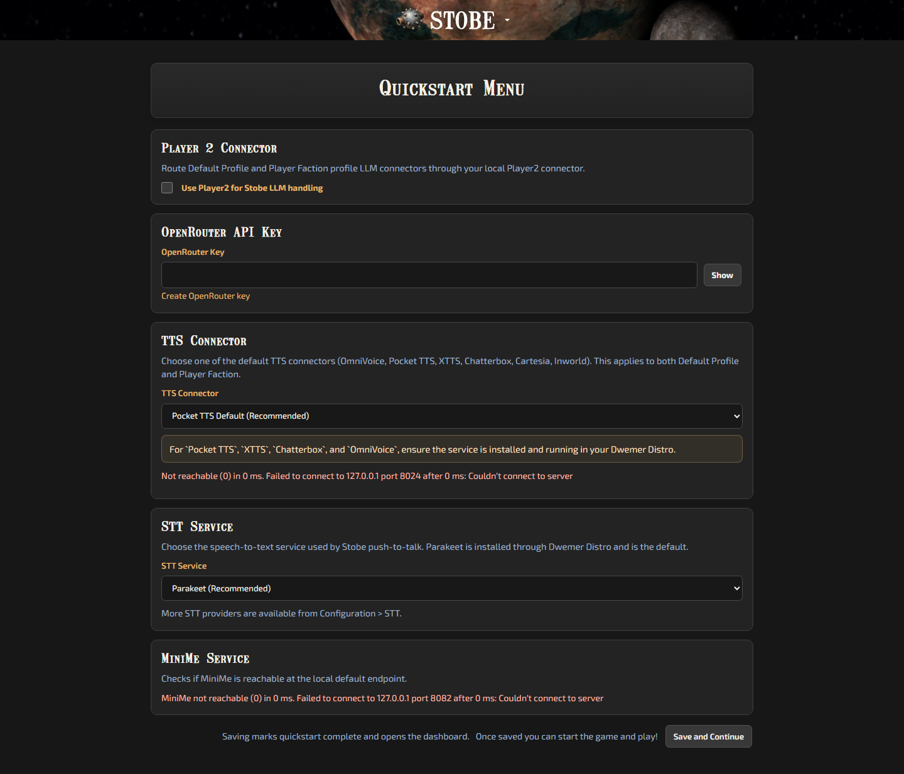

Access Token Creation. Make sure it has Read access!
After Quickstart finishes, select STOBE on the launcher Mods page.
Click STOBE Webpage to open the server website.
If the server is stopped, confirm the prompt to start it first.

The STOBE Mods page provides its update, webpage, Nexus, rollback, and uninstall controls.
STOBE Web Quickstart
Complete the Quickstart Menu in your browser:
Paste your OpenRouter Key, or enable Player2 for local LLM handling.
Select your TTS Connector.
Leave Parakeet selected for local speech-to-text, or choose another STT provider later.
QuickStart fills the Standard, Fast, Powerful, and Experimental response choices for the default and player-faction profiles. You can change them later from the profile editor.
OpenRouter is optional. To use another provider directly, save the rest of QuickStart and follow Use Your Own LLM Provider.

STOBE Quickstart collects the main server settings needed for a first run.
Or manually place it within C:\Program Files (x86)\Steam\steamapps\common\Kenshi\mods.
Now you are ready to play!
In-game Setup
Ensure that DwemerDistro is running and start RE_KENSHI (DO NOT START REGULAR KENSHI).
Ensure STOBE is enabled in the mod manager.
Once in game (no newgame required) follow the popup message.
Try talking to an NPC using the chat hotkey. You should get a response.
Well done, you have the mod installed!
READ ME
For normal server updates, restart the DwemerDistro launcher and click Update STOBE on the STOBE Mods page. Install the latest STOBE file from Nexus when a new game-plugin file is included. You do not need to reinstall DwemerDistro unless the release notes say so.